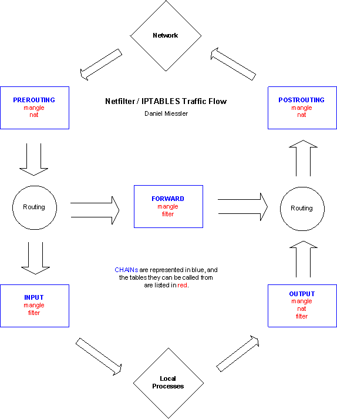
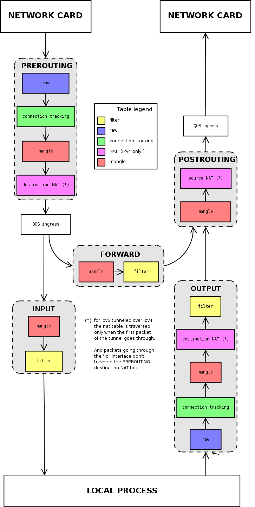
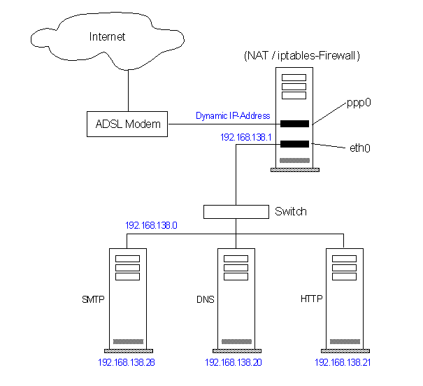

| 版本 | 日期 | 状态 | 修订人 | 摘要 |
|---|---|---|---|---|
| V1.0 | 2016-03-28 | 创建 | HunterFu | 初始版本 |
linux系统中,防火墙(Firewall),网址转换(NAT),数据包(package)记录,流量统计,这些功能是由Netfilter子系统所提供的，而iptables是控制Netfilter的工具.
iptables将许多复杂的规则组织成成容易控制的方式，以便管理员可以进行分组测试，或关闭、启动某组规则。
iptable能够为Unix、Linux和BSD个人工作站创建一个防火墙，也可以为一个子网创建防火墙以保护其它的系统平台。
iptable只读取数据包头，不会给信息流增加负担，也无需进行验证。
DNAT Destination Network Address Translation 目标网络地址转换。 DNAT是一种改变数据包目的ip地址的技术，经常和SNAT联用，以使多台服务器能共享一个ip地址连入Internet，并且继续服务。通过对同一个ip地址分配不同的端口，来决定数据的流向。
SNAT Source Network Address Translation源网络地址转换。这是一种改变数据包源ip地址的技术， 经常用来使多台计算机分享一个Internet地址。这只在IPv4中使用，因为IPv4的地址已快用完了，IPv6将解 决这个问题。

如上图可以看出，iptable总体结构.
PREROUTING 在数据包进入防火墙之后、路由判断之前对数据包进行修改
INPUT 在数据包被路由到本地之后，但在用户空间程序看到它之前对数据包进行修改
OUTPUT 用户空间程序处理数据包后，由本地发出，再次被路由之前更改数据包
FORWARD 在最初的路由判断之后、最后一次更改包的源地址之前对数据包进行修改
POSTROUTING 在所有路由判断之后,对数据包进行修改
注意: 链 是每个数据包流需要经过的不同环节，你可以在不同的环节根据需要设置不同的过滤策略,每个链的默认策略都是Accept
Mangle表 这个表主要用来mangle包，你可以使用mangle匹配来改变包的一些属性，比如 TOS（TYPE OF SERVICE),TTL (TIME TO LIVE),MARK(后续流量控制TC等)
Nat表 此表仅用于NAT，也就是转换包的源或目标地址。注意，就象我们前面说过的，只有流的第一个 包会被这个链匹配，其后的包会自动被做相同的处理(DNAT,SNAT,MASQUERADE)
Filter表
此表用来过滤数据包，我们可以在任何时候匹配包并过滤它们。 我们就是在这里根据包的内容对包做DROP或ACCEPT的.
iptalbe中,要用 -t 参数指定要操作哪个表,如果没有 -t 参数，就默认对filter表操作.
Raw表 优先级最高，设置raw时一般是为了不再让iptables做数据包的链接跟踪处理，提高性能
注意: 表 是规则的集合组,每个表中的规则条目是按顺序匹配的,你可以在数据包经过的不同环节设置规则,表的处理优先级：raw > mangle > nat > filter

从上图可以看出，数据包流环节和表的配合使用方法

上图是应用场景的简单拓扑描述,下面的应用场景举例，都以上图为参考.
系统启动的时候所有的默认策略都是ACCEPT,在下面的场景举例中，我们都是在这种前提下设定iptable的
下面每个场景举例都是独立的，没有相关联性的
目标 : 网关服务器系统自生安全策略，只对内网用户开放22端口(sshd服务)
#清空 filter table
[root@localhost]# iptables -F -t filter
[root@localhost]# iptables -X -t filter
[root@localhost]# iptables -Z -t filter
#清空 nat table
[root@localhost]# iptables -F -t nat
[root@localhost]# iptables -X -t nat
[root@localhost]# iptables -Z -t nat
#设置默认策略(INPUT链默认为DROP)
[root@localhost]# iptables -t filter -P INPUT DROP
[root@localhost]# iptables -t filter -P OUTPUT ACCEPT
[root@localhost]# iptables -t filter -P FORWARD ACCEPT
#回环接口(lo),默认accept
[root@localhost]# iptables -A INPUT -p ALL -i lo -j ACCEPT
#只对内网用户开放sshd服务
[root@localhost]# iptables -A INPUT -p tcp -s 192.168.138.0/24 --dport 22 -j ACCEPT
说明: 防火墙的策略顺序一般都是 从 非信任 ==> 信任,默认关闭所有访问权限,然后按照需要逐条开放访问权限.
目标：使局域网的用户都可以访问外网的服务器
[root@localhost]# echo 1 > /proc/sys/net/ipv4/ip_forward
[root@localhost]# iptables -t nat -A POSTROUTING -o ppp0 -j MASQUERADE
说明: SNAT 和 MASQUERADE 区别
SNAT : 不管是几个地址，必须明确的指定要SNAT的ip，适合网关服务器有固定地址或者是固定地址范围. MASQUERADE : 是针对ADSL动态拨号这种场景而设计,从服务器的网络接口上,自动获取当前ip地址来做NAT,这样就实现了动态SNAT地址转换
目标：使外网用户可以访问到局域网192.168.138.21这台HTTP服务
[root@localhost]# echo 1 > /proc/sys/net/ipv4/ip_forward
[root@localhost]# iptables -t nat -A PREROUTING -p tcp -m tcp --dport 80 -j DNAT --to-destination 192.168.138.21
[root@localhost]# iptables -t nat -A POSTROUTING -o ppp0 -j MASQUERADE
目标: 使局域网用户,访问外网web服务时，自动使用squid作web透明代理服务器。
[root@localhost]# echo 1 > /proc/sys/net/ipv4/ip_forward
[root@localhost]# iptables -t nat -A PREROUTING -s 192.168.138.0/24 -p tcp --dport 80 -i eth0 -j DNAT --to 192.168.138.1
[root@localhost]# iptables -t nat -A PREROUTING -s 192.168.138.0/24 -p tcp --dport 80 -i eth0 -j REDIRECT --to 3128
[root@localhost]# iptables -t nat -A POSTROUTING -o ppp0 -j MASQUERADE